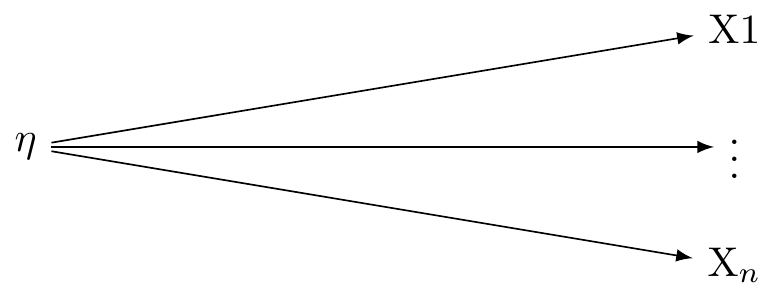
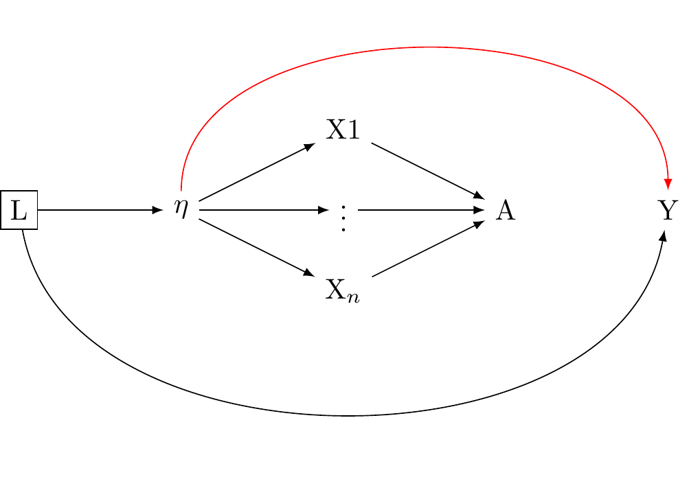
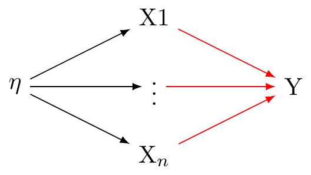
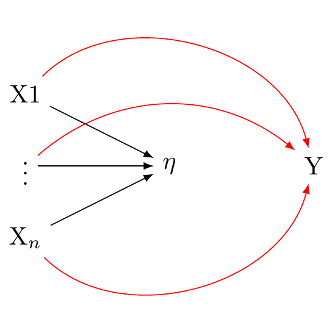
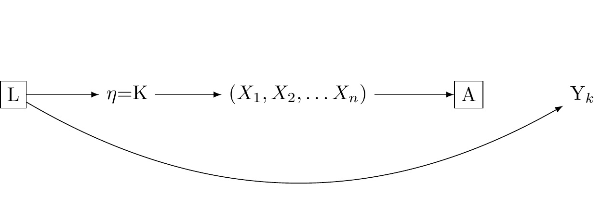
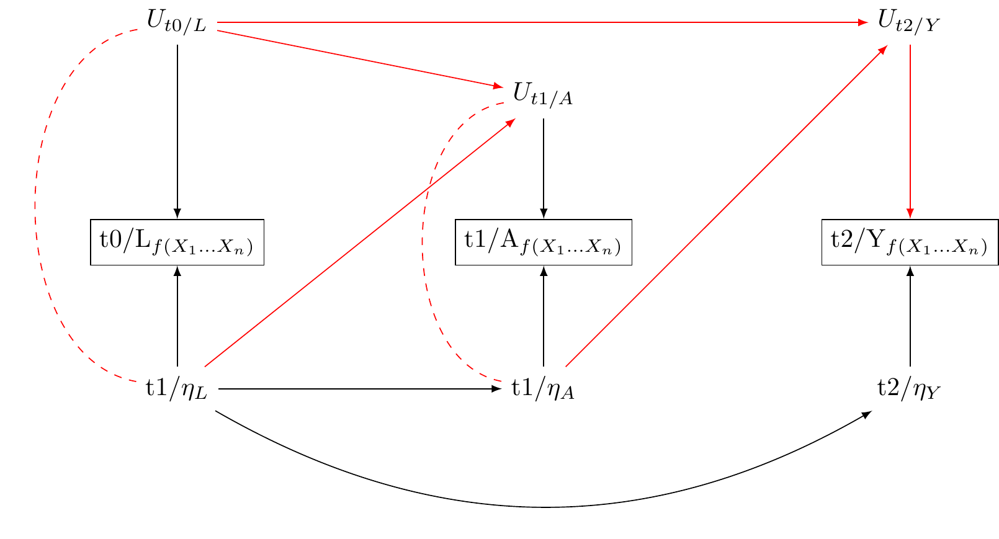
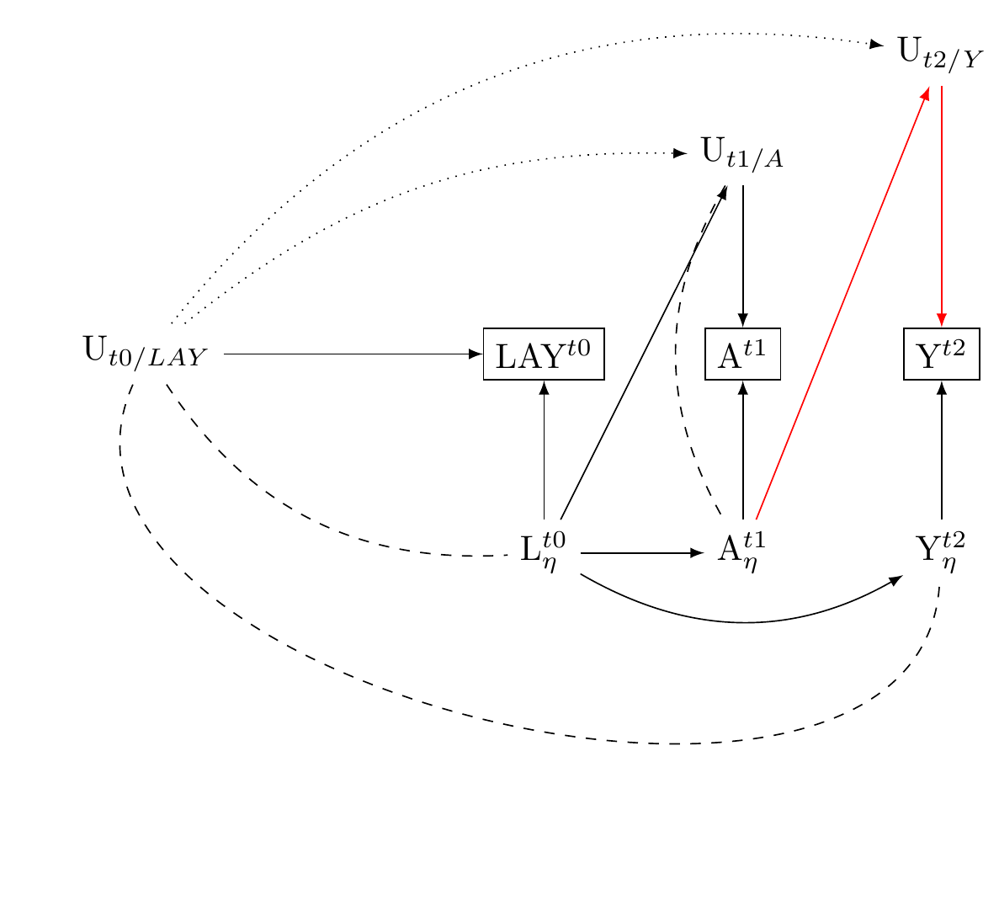

![]()

Overview
By the end of this lecture you will:
Understand the causal assumptions implied by the factor analytic interpretation of the formative and reflective models.
Be able to distinguish between statistical and structural interpretations of these models.
Understand why Vanderweele thinks consistent causal estimation is possible using the theory of multiple versions of treatments for constructs with multiple indicators
Two ways of thinking about measurement in psychometric research.
In psychometric research, formative and reflective models describe the relationship between latent variables and their respective indicators. VanderWeele discusses this in the assigned reading for this week (Tyler J. VanderWeele 2022).
Reflective Model (Factor Analysis)
In a reflective measurement model, also known as an effect indicator model, the latent variable is understood to cause the observed variables. In this model, changes in the latent variable cause changes in the observed variables. Each indicator (observed variable) is a ‘reflection’ of the latent variable. In other words, they are effects or manifestations of the latent variable. These relations are presented in Figure 1.
The reflective model may be expressed:
X_i = \lambda_i \eta + \varepsilon_i
Here, X_i is an observed variable (indicator), \lambda_i is the factor loading for X_i, \eta is the latent variable, and \varepsilon_i is the error term associated with X_i. It is assumed that all the indicators are interchangeable and have a common cause, which is the latent variable \eta.
In the conventional approach of factor analysis, the assumption is that a common latent variable is responsible for the correlation seen among the indicators. Thus, any fluctuation in the latent variable should immediately lead to similar changes in the indicators.These assumptions are presented in Figure 1.
The Formative Model (Factor Analysis)
In a formative measurement model, the observed variables are seen as causing or determining the latent variable. Here again, there is a single latent variable. However this latent variable is taken to be an effect of the underlying indicators. These relations are presented in Figure 2.
The formative model may be expressed:
\eta = \sum_i\lambda_i X_i + \varepsilon
In this equation, \eta is the latent variable, \lambda_i is the weight for X_i (the observed variable), and \varepsilon is the error term. The latent variable \eta is a composite of the observed variables X_i.
In the context of a formative model, correlation or interchangeability between indicators is not required. Each indicator contributes distinctively to the latent variable. As such, a modification in one indicator doesn’t automatically imply a corresponding change in the other indicators.

Structural Interpretation of the formative model and reflective models (Factor Analysis)
However, this analysis of reflective and formative models assumed that the latent η was causally efficacious. This may not be the case (VanderWeele 2022)
VanderWeele distinguishes between statistical and structural interpretations of the equations preesented above.
Statistical Model: a mathematical construct that shows how observable variables, also known as indicators, are related to latent or unseen variables. These are presented in the equations above
Structural Model: A structural model refers to the causal assumptions or hypotheses about the relationships among variables in a statistical model. The assumptions of the factor analytic tradition are presented in Figure 2 and Figure 1 are structural models.
We have seen that the reflective model statistically implies that the observed variables (indicators) are reflections or manifestations of the latent variable, expressed as X_i = \lambda_i \eta + \varepsilon_i. However, the factor analytic tradition makes the additional structural assumption that a univariate latent variable is causally efficacious and influences the observed variables, as in: Figure 3 (a).
We have also seen that the formative model statistically implies that the latent variable is formed or influenced by the observed variables, expressed as \eta = \sum_i\lambda_i X_i + \varepsilon. However, the factor analytic tradition makes the additional assumption that the observed variables give rise to a univariate latent variable, as in Figure 3 (b).


The reflective model implies X_i = \lambda_i \eta + \varepsilon_i, which factor analysts take to imply Figure 3 (a).
Problems with the structural interpretations of the reflective and formative factor models.
While the statistical model X_i = \lambda_i \eta + \varepsilon_i aligns with Figure 3 (a), it also alings with Figure 4. Cross-sectional data, unfortunately, do not provide enough information to discern between these different structural interpretations.
Similarly, the statistical model \eta = \sum_i\lambda_i X_i + \varepsilon agrees with Figure 3 (b) but it also agrees with@fig-dag-reflectiveassumptions-compatible_again. Here too, cross-sectional data cannot decide between these two potential structural interpretations.
There are other, compatible structural interprestations as well. The formative and reflective conceptions of factor analysis are compatible with indicators having causal effects as shown in (fig_dag_multivariate_reality_again?). They are also compatible with a multivariate reality giving rise to multiple indicators as shown in Figure 6.




VanderWeele’s key observation is this:
While cross-sectional data can provide insights into the relationships between variables, they cannot conclusively determine the causal direction of these relationships.
This results is worrying. The structural assumptions of factor analysis underpin nearly all psychological research. If the cross-sectional data used to derive factor structures cannot decide whether the structural interpretations of factor models are accurate, where does that leave us?
More worrying still, VanderWeele discusses several longitudinal tests for structural interpretations of univariate latent variables that do not pass.
Where does that leave us? In psychology we have heard about a replication crisis. We might describe the reliance on factor models as an aspect of a much larger, and more worrying “causal crisis” (Bulbulia 2022)
Review of the theory of multiple versions of treatment

Perhaps not all is lost. VanderWeele looks to the theory of multiple versions of treatment for solace.
Recall, a causal effect is defined as the difference in the expected potential outcome when everyone is exposed (perhaps contrary to fact) to one level of a treatment, conditional on their levels of a confounder, with the expected potential outcome when everyone is exposed to a a different level of a treatement (perhaps contrary to fact), conditional on their levels of a counfounder.
\delta = \sum_l \left( \mathbb{E}[Y|A=a,l] - \mathbb{E}[Y|A=a^*,l] \right) P(l)
where \delta is the causal estimand on the difference scale (\mathbb{E}[Y^0 - Y^0]).
In causal inference, the multiple versions of treatment theory allows us to handle situations where the treatment isn’t uniform, but instead has several variations. Each variation of the treatment, or “version”, can have a different impact on the outcome. Consistency is not violated because it is redefined: for each version of the treatment, the outcome under that version is equal to the observed outcome when that version is received. Put differently we may think of the indicator A as corresponding to many version of the true treament K. Where conditional independence holds such that there is a absence of confounding for the effect of K on Y given L, we have: Y_k \coprod A|K,L. This states conditional on L, A gives no information about Y once K and L are accounted for. When Y = Y_k if K = k and Y_k is independent of K, condition on L, then A may be thought of as a coarsened indicator of K, as shown in (fig_dag_multiple_version_treatment_dag?). We may estimate consistent causal effects where:
\delta = \sum_{k,l} \mathbb{E}[Y_k|l] P(k|a,l) P(l) - \sum_{k,l} \mathbb{E}[Y_k|l] P(k|a^*,l) P(l)
The scenario represents a hypothetical randomised trial where within strata of covariates L, individuals in one group receive a treatment K version randomly assigned from the distribution of K distribution (A = 1, L = l) sub-population. Meanwhile, individuals in the other group receive a randomly assigned K version from (A = 0, L = l)
This theory finds its utility in practical scenarios where treatments seldom resemble each other – we discussed the example of obesity last week (see: (Tyler J. VanderWeele and Hernan 2013)).
Reflective and formative measurement models may be approached as multiple versions of treatment
Vanderweele applies the following substitution:
\delta = \sum_{\eta,l} \mathbb{E}[Y_\eta|l] P(\eta|A=a+1,l) P(l) - \sum_{\eta,l} \mathbb{E}[Y_\eta|l] P(\eta|A=a,l) P(l)
Specifically, we substitue K with \eta from the previous section, and compare the measurement response A = a + 1 with A = a. We discover that if the influence of \eta on Y is not confounded given L, then the multiple versions of reality consistent with the reflective and formative statistical models of reality will not lead to biased estimation. \delta retains its interpretability as a comparison in a hypothetical randomised trial in which the distribution of coarsened measures of \eta_A are balanced within levels of the treatment, conditional on \eta_L.
This connection between measurement and the multiple versions of treatment framework provides a hope for consistent causal inference varying reliabilities of measurement.
However, as with the theory of multiple treatments, we might not known how to interpret our results because we don’t know the true relationships between our measured indicators and underlying reality.
How can we do better?

VanderWeele’s model of reality
VanderWeele’s article concludes as follows:
A preliminary outline of a more adequate approach to the construction and use of psychosocial measures might thus be summarized by the following propositions, that I have argued for in this article: (1) Traditional univariate reflective and formative models do not adequately capture the relations between the underlying causally relevant phenomena and our indicators and measures. (2) The causally relevant constituents of reality related to our constructs are almost always multidimensional, giving rise both to our indicators from which we construct measures, and also to our language and concepts, from which we can more precisely define constructs. (3) In measure construction, we ought to always specify a definition of the underlying construct, from which items are derived, and by which analytic relations of the items to the definition are made clear. (4) The presumption of a structural univariate reflective model impairs measure construction, evaluation, and use. (5) If a structural interpretation of a univariate reflective factor model is being proposed this should be formally tested, not presumed; factor analysis is not sufficient for assessing the relevant evidence. (6) Even when the causally relevant constituents of reality are multidimensional, and a univariate measure is used, we can still interpret associations with outcomes using theory for multiple versions of treatment, though the interpretation is obscured when we do not have a clear sense of what the causally relevant constituents are. (7) When data permit, examining associations item-by-item, or with conceptually related item sets, may give insight into the various facets of the construct.
A new integrated theory of measurement for psychosocial constructs is needed in light of these points – one that better respects the relations between our constructs, items, indicators, measures, and the underlying causally relevant phenomena. (VanderWeele 2022)

This seems to me sensible. However, Figure 8 this is not a causal graph. The arrows to not clearly represent causal relations. It leaves me unclear about what to practically do.
Let’s return to the three wave many-outcomes model described in previous weeks. How should we revise this model in light of measurement theory?
How theory of dependent and directed measurement error might be usefully employed to develop a pragmatic responses to construct measurement
By now you are all familiar with The New Zealand Attitudes and Values Study (NZAVS),which is a national probability survey collects a wide range of information, including data on distress, exercise habits, and cultural backgrounds.

Consider a study that seeks to use this dataset to investigate the effect of regular exercise on psychological distress. In contrast to previous graphs, let us allow for latent reality to affect our measurements, as well as the discrepencies between our measurements and true underlying reality. We shall use Figure 9 as our initial guide.
We represent the true exercise by \eta_A. We represent true psychological distress by \eta_Y. Let \eta_L denote a persons true workload, and assume that this state of work affects both levels of excercise and psychological distress.
To bring the model into contact with measurement theory, Let us describe measurements of these latent true underlying realities as functions of multiple indicators: L_{f(X_1\dots X_n)}, A_{f(X_1\dots X_n)}, and A_{f(X_1\dots X_n)}. These constructs are measured realisations of the underlying true states. We assume that the true states of these variables affect their corresponding measured states, and so draw arrows from \eta_L\rightarrow{L_{f(X_1\dots X_n)}}, \eta_A\rightarrow{A_{f(X_1\dots X_n)}}, \eta_Y\rightarrow{Y_{f(X_1\dots X_n)}}.
We also assume unmeasured sources of error that affect the measurements: U_{L} \rightarrow L_{f(X_1\dots X_n)}, U_{A} \rightarrow A_{f(X_1\dots X_n)}, and U_{Y} \rightarrow Y_{f(X_1\dots X_n)}. That is, we allow that our measured indicators may “see as through a mirror, in darkness,” the underlying true reality they hope to capture (Corinthians 13:12). We use U_{L}, U_{A} and U_{Y} to denote the unmeasured sources of error in the measured indicators. These are the unknown, and perhaps unknowable, darkness and mirror.
Allow that the true underlying reality represented by the \eta_{var} may be multivariate. Similarly, allow the true underlying reality represented by \U_{var} is multivariate.
We now have a causal diagramme that more precisely captures VanderWeele’s thinking as presented in Figure 8. In our Figure 9, we have fleshed out \mathcal{R} in a way that may include natural language concepts and scientific language, or constructs, as latent realities and latent unmeasured sources of error in our constructs.
The utility of describing the measurement dynamics using causal graphs is apparrent. We can understand that the measured states, once conditioned upon create collider biases which opens path between the unmeasured sources of error and the true underlying state that gives rise to our measurements. This is depicted by a the arrows U_{var} and from \eta_{var} into each var_{f(X1, X2,\dots X_n)}
Notice: where true unmeasured (multivariate) psycho-physical states are related to true unmeasured (multivariate) sources of error in the measurement of those states, the very act of measurement opens pathways to confounding.
If for each measured construct var_{f(X1, X2,\dots X_n)}, the sources of error U_{var} and the unmeasured consituents of reality that give rise to our measures \eta_{var} are uncorrelated with other variables U\prime_{var} and from \eta\prime_{var} and var\prime_{f(X1, X2,\dots X_n)}, our estimates may be downwardly biased toward the null. However, d-separation is preserved. Where errors are uncorrelated with true latent realities, there is no new pathway that opens information between our exposure and outcome. Consider the relations presented in Figure 10

Here,
\eta_L \rightarrow L: We assume that the true workload state affects its measurement. This measurement, however, may be affected by an unmeasured error source, U_{L}. Personal perceptions of workload can introduce this error. For instance, a person may perceive their workload differently based on recent personal experiences or cultural backgrounds. Additionally, unmeasured cultural influences like societal expectations of productivity could shape their responses independently of the true workload state. There may be cultural differences - Americans may verstate; the British may present effortless superiority.
\eta_A \rightarrow A: When it comes to exercise, the true state may affect the measured frequency (questions about exercise are not totally uninformative). However, this measurement is also affected by an unmeasured source of error, which we denote by U_{A}. For example, a cultural shift towards valuing physical health might prompt participants toreport higher activity levels, introducing an error, U_{A}.
\eta_Y \rightarrow Y: We assume questions about distress are not totally uninformative: actual distress affects the measured distress. However this measurement is subject to unmeasured error: U_{Y}. For instance, an increased societal acceptance of mental health might change how distress is reported creating an error, U_{Y}, in the measurement of distress. Such norms, moreover, may change over time.
U_{L} \rightarrow L, U_{A} \rightarrow A, and U_{Y} \rightarrow Y: These edges between the nodes indicate how each unmeasured error source can influence its corresponding measurement, leading to a discrepancy between the true state and the measured state.
U_{L} \rightarrow U_{A} and U_{L} \rightarrow U_{Y}: These relationships indicate that the error in the stress measurement can correlate with those in the exercise and mood measurements. This could stem from a common cultural bias affecting how a participant self-reports across these areas.
\eta_A \rightarrow U_{Y} and \eta_L \rightarrow U_{A}: These relationships indicate that the actual state of one variable can affect the error in another variable’s measurement. For example, a cultural emphasis on physical health leading to increased exercise might, in turn, affect the reporting of distress levels, causing an error, U_{Y}, in the distress measurement. Similarly, if a cultural trend pushes people to work more, it might cause them to over or underestimate their exercise frequency, introducing an error, U_{A}, in the exercise measurement.
Confounding control by baseline measures of exposure and outcome: Dependent Directed Measurement Error in Three-Wave Panels
We propose a three-wave panel design to control confounding. This design adjusts for baseline measurements of both exposure and the outcome.
Understanding this approach in the context of potential directed and correlated measurement errors gives us a clearer picture of its strengths and limitations.
This three-wave panel design incorporates baseline measurements of both exposure and confounders. As a result, any bias that could come from unmeasured sources of measurement errors should be uncorrelated with their baseline effects.
For instance, if individuals have a social desirability bias at the baseline, they would have to develop a different bias unrelated to the initial one for new bias to occur due to correlated unmeasured sources of measurement errors.
However, we cannot completely eliminate the possibility of such new bias development. There could also be potential new sources of bias from directed effects of the exposure on the error term of the outcome, which can often occur due to panel attrition.
To mitigate this risk, we adjust for panel attrition/non-response using methods like multiple imputation. We also consistently perform sensitivity analyses to detect any unanticipated bias.
Despite these potential challenges, it is worth noting that by including measures of both exposure and outcome at baseline, the chances of new confounding are significantly reduced.
Therefore, adopting this practice should be a standard procedure in multi-wave studies as it substantially minimizes the likelihood of introducing novel confounding factors.

Slides
Bulbulia, Joseph A. 2022. “A Workflow for Causal Inference in Cross-Cultural Psychology.” Religion, Brain & Behavior 0 (0): 1–16. https://doi.org/10.1080/2153599X.2022.2070245.
VanderWeele, Tyler J. 2022. “Constructed Measures and Causal Inference: Towards a New Model of Measurement for Psychosocial Constructs.” Epidemiology 33 (1): 141. https://doi.org/10.1097/EDE.0000000000001434.
VanderWeele, Tyler J, and Miguel A Hernan. 2013. “Causal Inference Under Multiple Versions of Treatment.” Journal of Causal Inference 1 (1): 120.
Reuse
MIT
Comment on slow changes
Over long periods of time we can expect additional sources of confounding. Changes in cultural norms and attitudes can occur over the duration of a longitudinal study like the NZAVS, leading to residual confounding. For example, if there is a cultural shift towards increased acceptance of mental health issues, this might change how psychological distress is reported over time, irrespective of baseline responses.